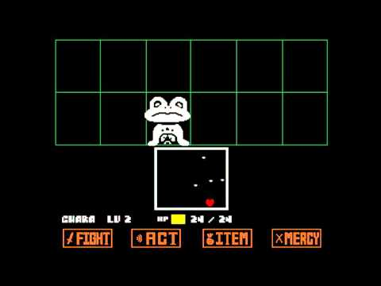

A primeira decisão leva você a um caminho de mistérios e armadilhas

você encontrou um mostro "frog"
você mata frog, a poeira de sua alma se esvai pelo ar
frog agradece pela misericordia, e cameça a cantar RAP "laços de rendeção"
você encontra sans